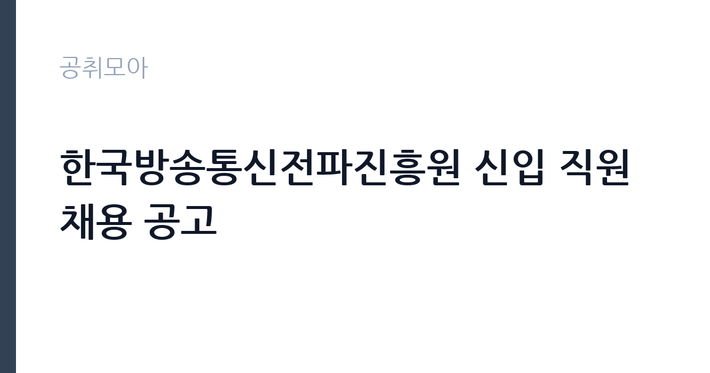

[공공기관] 한국방송통신전파진흥원 신입 직원 채용 공고
한국방송통신전파진흥원 · 경기 · 마감 2026-11-17 (D-15) · 출처 잡알리오

한눈에 보는 모집 조건
| 기관 | 한국방송통신전파진흥원 |
|---|---|
| 공고명 | 한국방송통신전파진흥원 신입 직원 채용 공고 |
| 고용형태 | 정규직 |
| 근무지 | 경기 |
| 게시일 | 2026-11-03 |
| 마감일 | 2026-11-17 (D-15) |
지원자격, 이렇게 읽으세요
- KCA 인사규정 "[별표 1] 직원채용 공통자격기준" 적용
- 성별, 병역 제한 없으며, 임용일 기준 근무가능자
- 기계설비유지관리자(고급) 이상 자격을 보유한 자
정규직 채용은 기간의 정함이 없는 근로계약을 전제로 합니다. 수습 기간을 두고 평가한 뒤 정규직으로 확정하는 절차가 일반적이며 기관의 인사 규정과 임금 체계를 적용받습니다. 이번 공고는 한국방송통신전파진흥원이 직접 진행하는 자체 전형입니다. 공통 요건은 KCA 인사규정 별표 1의 직원채용 공통자격기준을 따르며, 임용일 기준 근무가 가능해야 하고 인사규정 제12조 결격사유에 해당하지 않아야 합니다. 정년은 임용일 기준 만 60세 미만이나, 경비 직종은 만 65세 미만으로 따로 정해져 있습니다. 시설관리(기계)는 기계설비유지관리자 고급 이상 자격 보유가 필수이고, 경비(보훈)는 국가유공자 등 예우 및 지원에 관한 법률에 따라 취업지원대상자 증명서 발급이 가능해야 합니다. 즉 경비 직종은 보훈 대상자만 지원할 수 있는 제한 전형이므로, 자격 판단을 접수 전에 끝내야 합니다. 제출서류는 공고문에 적힌 순서대로 정리하면 담당자가 확인하기 쉽습니다. 동일 직무 경력자와 경쟁하게 되므로, 관련 경험이 있다면 증명서에 업무 내용이 구체적으로 적히도록 요청하십시오. 자격증은 유효 기간과 등록 상태를 확인해야 합니다. 갱신이 필요한 자격이라면 갱신 여부를 먼저 점검하십시오. 이 공고 원문에 적힌 응시 조건 문구는 'KCA 인사규정 "[별표 1] 직원채용 공통자격기준" 적용' / '성별, 병역 제한 없으며, 임용일 기준 근무가능자' / '기계설비유지관리자(고급) 이상 자격을 보유한 자'입니다. 문구를 그대로 읽고 본인 해당 여부를 하나씩 표시해 두면 서류 단계에서 탈락하는 일을 줄일 수 있습니다.
이 공고의 포인트
이 공고의 첫 번째 포인트는 고용 형태입니다. 수습 기간 평가를 통과하면 기간의 정함이 없는 신분이 되어 고용이 안정됩니다. 두 번째는 업무 범위가 명확하다는 점입니다. 시설관리·경비(직종별) 직무로 채용되므로 배치 이후 담당 업무가 크게 흔들리지 않습니다. 세 번째는 근무지입니다. 경기 지역 근무로 접근성은 좋지만 그만큼 지원자가 몰리는 지역이므로 경쟁률을 넉넉히 잡아야 합니다. 직무 특성이 분명해 본인의 경험과 맞는지 빠르게 판단할 수 있습니다. 같은 직무로 함께 올라온 공고 가운데 접수 마감이 가장 늦은 편이라 준비 시간을 상대적으로 확보할 수 있습니다. 선발 인원은 공고문에 명시되어 있으니 모집분야 항목을 함께 확인하십시오.
전형은 어떻게 진행되나
전형은 서류심사와 면접심사를 기본으로 하고 직무에 따라 필기나 실기, 체력검정이 추가됩니다. 서류 단계에서는 응시자격 충족 여부와 제출서류 형식을 확인하며 이 단계에서 탈락하는 지원자가 적지 않습니다. 면접은 직무 이해도와 경험을 확인하는 방식으로 진행되고 발표는 개별 통보나 홈페이지 게시로 이뤄집니다. 최종합격 이후에는 결격사유 조회와 채용 신체검사가 이어지며 이 절차에서 문제가 확인되면 합격이 취소될 수 있습니다. 구체적인 전형 단계와 배점은 공고문에 표로 정리되어 있으니 원문을 기준으로 준비하십시오. 전형 일정이 공고문에 날짜로 명시되어 있으니 달력에 옮겨 두고 준비하십시오.
원문에서 확인한 전형 방식
□응시자격 ○ 공통사항 - KCA 인사규정 "[별표 1] 직원채용 공통자격기준" 적용 - 성별, 병역 제한 없으며, 임용일 기준 근무가능자 - 임용일 기준 정년 만 60세 미만. 단, 경비는 정년 만 65세 미만 - KCA 인사규정 제12조(결격사유)에 해당되지 않는 자 ○ 시설관리(기계) - 기계설비유지관리자(고급) 이상 자격을 보유한 자 ○ 경비(보훈) - 「국가유공자 등 예우 및 지원에 관한 법률」 등 보훈관련 법령에 따라 취업지원대상자 증명서 발급이 가능한 자 ※ 세부내용 채용공고문 참조
이런 분께 추천해요
- 기계설비유지관리자 고급 이상 자격을 보유한 분
- 취업지원대상자 증명서 발급이 가능한 분
- 교대·야간 근무를 수용할 수 있는 분
지원 전 체크리스트
- 응시자격 요건과 경력 기준을 충족하는가 — 경력은 증명서로 입증해야 합니다
- 수습 기간과 정규직 전환 조건을 확인했는가
- 제출서류 목록을 모두 준비했는가 — 누락 시 서류 단계에서 탈락합니다
- 접수 마감 2026-11-17 이전에 접수 방식을 확인해 제출했는가
모집 일정과 제출 타이밍
공고 게시일은 2026-11-03, 접수 마감은 2026-11-17입니다. 준비 기간은 약 14일로 서류 준비와 자격 증빙을 함께 처리하기에는 넉넉하지 않은 편입니다. 첫 이틀 안에 공고문과 첨부 서식을 내려받아 요건을 확인하고 남은 기간에 증빙 서류를 발급받는 일정이 현실적입니다. 면접은 서류 합격자 발표 후 짧은 간격으로 진행되는 경우가 많으므로 서류 제출과 동시에 면접 준비를 시작하는 편이 안전합니다. 마감일에는 접수 시스템이 몰리므로 하루 전까지 제출을 마치는 것이 좋습니다. 임용 예정일이 빠르게 잡히는 공고이므로 현재 일정과 겹치지 않는지 미리 확인하십시오.
직무 이해하기: 공공기관
한국방송통신전파진흥원(KCA)은 방송통신 설비의 적합성 평가와 전파 관리, 방송통신 진흥 사업을 수행하는 준정부기관입니다. 이번 신입 채용은 한 장의 공고에 시설관리(기계)와 경비(보훈) 직종을 함께 담았습니다. 시설관리(기계)는 청사와 방송통신 시험설비의 기계 설비를 점검·유지하고 고장에 대응하는 업무로, 기계설비유지관리자 자격을 전제로 합니다. 경비(보훈)는 청사 출입 통제와 순찰, 방문자 안내, 방호 설비 확인을 맡고 취업지원대상자 전형으로 운영됩니다. 두 직종은 자격 요건과 정년 기준이 다르므로 모집분야 표에서 본인 직종 행을 먼저 확정해야 합니다. 업무 강도와 근무 시간대는 부서 배치에 따라 달라지므로 면접에서 확인하는 것이 가장 정확합니다.
자기소개서 작성 팁
지원서 첫 문단에서 지원 직종을 분명히 밝히십시오. 같은 공고에 시설관리와 경비가 함께 담겨 있어 어떤 자리에 지원했는지 드러나지 않으면 준비도가 낮게 평가됩니다. 시설관리 지원자는 자격증 취득 시점과 담당했던 설비 규모, 예방 점검 실적을 수치로 제시하십시오. 경비 지원자는 보훈 대상자임을 증빙과 함께 밝히고, 시설 보안이나 순찰 업무 경험을 구체적으로 쓰십시오. 직무 경험이 많지 않다면 경험의 양보다 과정을 구체적으로 쓰는 편이 낫습니다. 어떤 상황에서 무엇을 판단했고 어떤 결과가 나왔는지 순서대로 서술하면 신뢰가 생깁니다. 지원 동기와 기여 방안은 한 문단씩 짧게 유지하고, 가장 자신 있는 경험에 분량을 몰아주십시오. 마지막 문장은 포부보다 구체적인 실행 계획으로 끝내는 것이 좋습니다.
면접 준비 포인트
면접에서는 직종별 실무를 기준으로 질문합니다. 시설관리 지원자는 다뤄본 기계 설비의 종류와 용량, 정기 점검 주기, 고장 발생 시 조치 순서를 구체적으로 답해야 합니다. 경비 지원자는 출입 통제 절차와 위급 상황 보고 체계, 방문자 응대 방식을 정리해 두십시오. 두 직종 모두 교대 근무 가능 여부와 야간 대응 의사를 확인하는 질문이 나오므로 솔직하게 답하는 편이 좋습니다. 면접은 공고문에 적힌 직무 내용을 얼마나 이해하고 있는지 확인하는 질문으로 시작하는 경우가 많으니, 모집분야 문구를 그대로 읽어 두는 것이 도움이 됩니다. 면접 당일 신분증과 제출서류 원본을 요구하는 경우가 있으니 공고문의 준비물 목록을 확인하십시오.
급여·근무조건 읽는 법
KCA는 알리오 경영공시 대상 기관으로 정규직 평균보수와 신입 초임이 매년 공시됩니다. 다만 이번 공고의 직종별 보수는 공고문 처우 항목과 사내 임금 규정에 따라 정해지므로, 공시된 기관 평균값을 본인 급여로 오해하지 않아야 합니다. 평균보수는 기본급에 고정수당·성과상여금·급여성 복리후생비를 합산한 값이고, 신입 초임은 대졸 사무직 무경력 기준입니다. 시설관리·경비 직종은 별도 임금표가 적용되고 교대 근무 시 야간·휴일수당이 붙습니다. 구체적 금액은 원문 보수표에서 확인하십시오. 2026년 적용 최저임금은 시급 10,320원, 월 환산 2,156,880원(주 40시간·209시간 기준)입니다. 고용노동부 고시 제2025-47호로 확정된 금액입니다. 공고문에 금액이 제시되지 않은 항목은 원문 보수표나 처우 설명에서 확인해야 하며 확인되지 않은 수치는 쓰지 않는 것이 원칙입니다. 비교할 때는 월 급여뿐 아니라 상여·명절휴가비·복지포인트·초과근무수당까지 포함한 연간 총액으로 계산하십시오. 기간제라면 계약 기간 동안의 총액을, 무기계약이라면 호봉 상승과 정년까지의 누적 소득을 기준으로 판단하는 편이 정확합니다.
자주 묻는 질문
- 선발 인원은 몇 명인가요?
공고문의 모집분야 항목에 직종별 인원이 표로 제시되어 있습니다. 첨부된 공고문 원문에서 확인하십시오. - 근무지는 어디인가요?
경기 지역의 한국방송통신전파진흥원 소속 근무지입니다. 세부 주소와 출퇴근 조건은 원문 공고문에서 확인할 수 있습니다. - 보수는 얼마인가요?
채용 신분(정규직)과 기관 임금 규정에 따라 정해지며 구체적인 금액은 공고문 처우 항목에 제시됩니다. 금액이 공개되지 않은 경우에는 원문의 보수표를 확인하십시오.
함께 보면 좋은 공고
[공공기관] 2026년 한국특허정보원 체험형 청년인턴 채용 — 마감 2026-11-18[공공기관] 한국폴리텍대학 진주캠퍼스 행정지원직(사무직원 휴직 대체인력) 채용 공고 — 마감 2026-11-10[공공기관] 대구경북첨단의료산업진흥재단 2026년 3차 정원외 계약직원 채용공 — 마감 2026-11-17출처: 잡알리오 공개정보를 바탕으로 공취모아가 정리한 안내글입니다. 모집 조건·일정은 변경될 수 있으니 지원 전 반드시 원문 공고문을 확인하세요. 본 글은 정보 제공용이며 합격을 보장하지 않습니다.